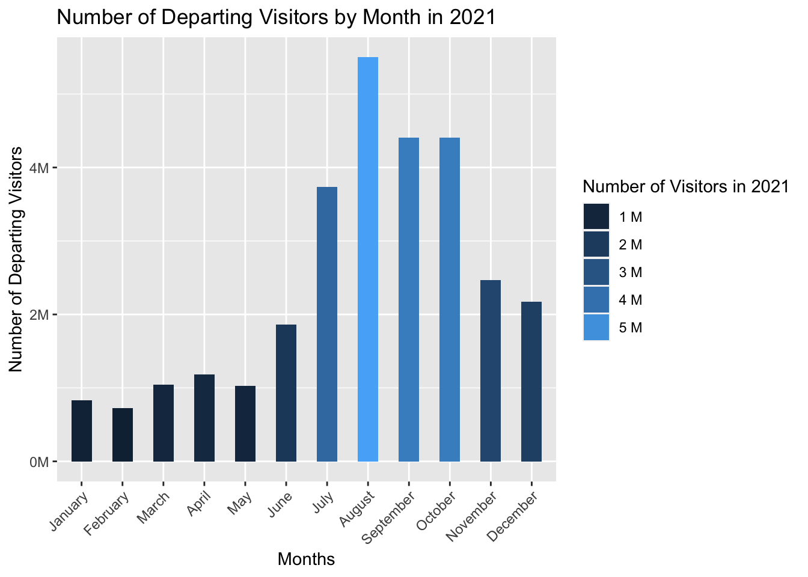
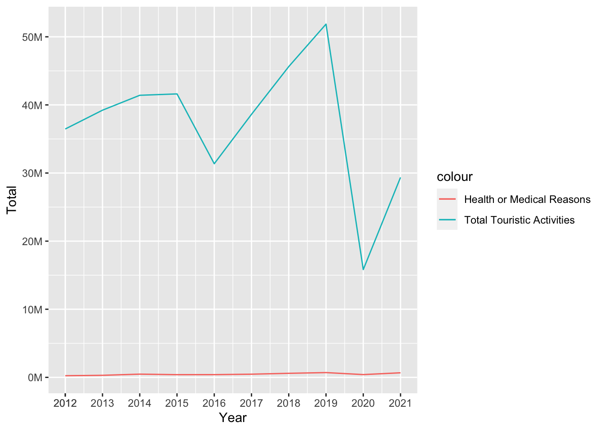
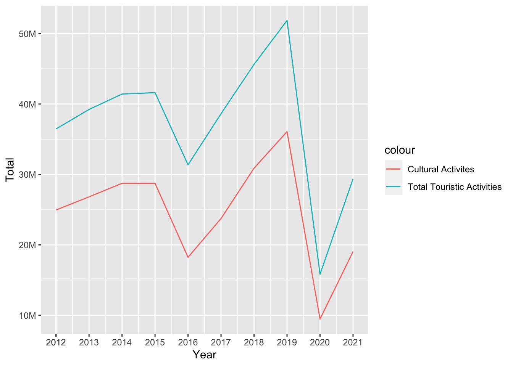
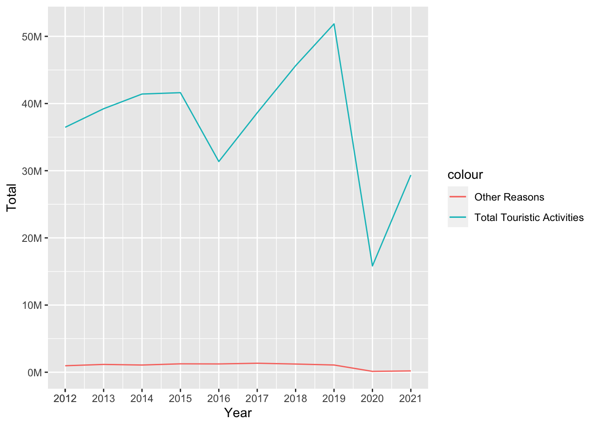
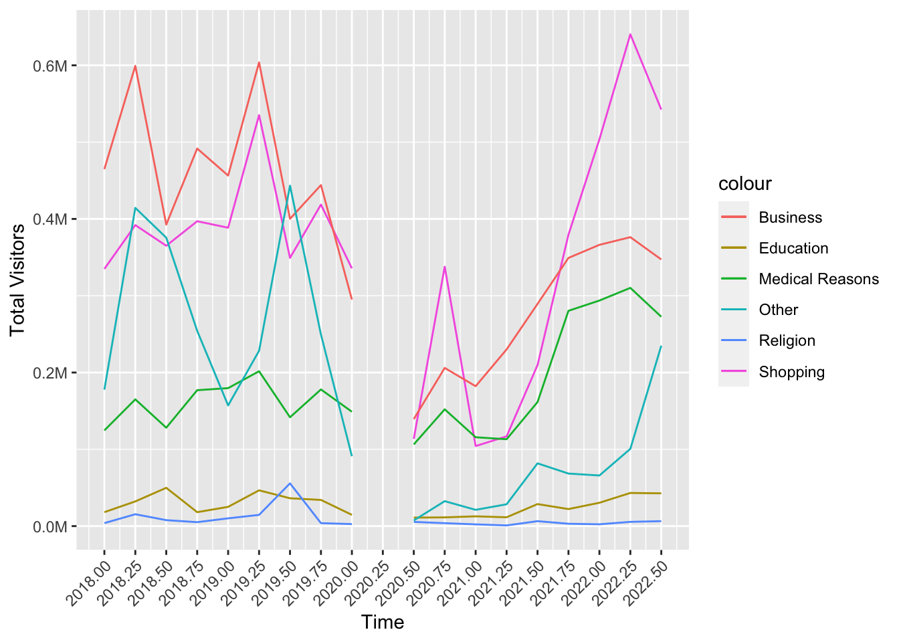

Code
library(tidyverse)
library(dplyr)
library(tidyr)
library(ggplot2)
library(reshape2)
library(plotly)
library(gapminder)
library(scales)
library(hrbrthemes)
library(viridis)
library(wordcloud2)library(tidyverse)
library(dplyr)
library(tidyr)
library(ggplot2)
library(reshape2)
library(plotly)
library(gapminder)
library(scales)
library(hrbrthemes)
library(viridis)
library(wordcloud2)We are going to analyze the changes of touristic activities according to the pandemic. As we mention in our project proposal we are going to make this analysis with scope of spending behaviors, nationality changes and why tourists came to Turkey.
First we are going to analyze the change in spending behavior. For this analysis we are going to use data sets income_nights and income_months. income_nights shows the spending data according to total and average expenditure and for how long and how many tourists stayed in Turkey. Income_months data set shows that total expenditure, income of tourists and number of visitors per month. Both data set start with 2012 and finish at third quarter of 2022. Also in both data set the values in April, May and June of 2020 is missing based on number of departing visitors and total income. There was no record because of the strict pandemic rules.
First lets check how many visitors came to Turkey over the years. Data for 2022 is missing since the year is not over yet.
income_nights <- readRDS(url("https://github.com/pjournal/mef06g-ramble-on/blob/main/term_project/income_nights.rds?raw=true"))
income_months <- readRDS(url("https://github.com/pjournal/mef06g-ramble-on/blob/main/term_project/income_months.rds?raw=true"))
income_n1 <- filter(income_nights, Quarter %in% c("Anual"))
ggplot(income_n1, aes(x = factor(Year), y= Number_of_Departing_Visitors, fill = Number_of_Departing_Visitors, ))+
geom_col(width = 0.5) + theme(axis.text.x = element_text(angle = 45, hjust = 1))+
ggtitle("Number of Departing Visitors by Year") +
xlab("Year") + ylab("Number of Departing Visitors") +
scale_y_continuous(labels = label_number(suffix = "M", scale = 1e-6)) +
scale_fill_continuous(labels = unit_format(unit = "M", scale = 1e-6)) +
guides(fill=guide_legend(title="Number of Departing Visitors"))
When we look at the graph, the sharp decrease in the number of tourists in 2020 and 2021 can be seen. Data are missing for April, May, June in 2020 since TUIK has not collected data in this duration due to the pandemic. If we want to look closely in 2020 and 2021 month by month the graphic shows that
income_m1 <- filter(income_months, Months %in% c("January", "February", "March", "April", "May", "June", "July", "August","September","October","November","December"))
income_m1$month_in_int <- as.integer(factor(income_m1$Months, levels = month.name))
ggplot(income_m1, aes(x = reorder(Months, +month_in_int), y = Number_of_Visitors_2020, fill= Number_of_Visitors_2020)) +
geom_col(width = 0.5) + theme(axis.text.x = element_text(angle = 45, hjust = 1)) +
ggtitle("Number of Departing Visitors by Month in 2020") +
xlab("Months") +
ylab("Number of Departing Visitors") +
scale_y_continuous(labels = label_number(suffix = "M", scale = 1e-6)) +
scale_fill_continuous(labels = unit_format(unit = "M", scale = 1e-6)) +
guides(fill=guide_legend(title="Number of Visitors in 2020"))
ggplot(income_m1, aes(x = reorder(Months, +month_in_int), y = Number_of_Visitors_2021, fill= Number_of_Visitors_2021)) +
geom_col(width = 0.5) + theme(axis.text.x = element_text(angle = 45, hjust = 1)) +
ggtitle("Number of Departing Visitors by Month in 2021") +
xlab("Months") +
ylab("Number of Departing Visitors") +
scale_y_continuous(labels = label_number(suffix = "M", scale = 1e-6)) +
scale_fill_continuous(labels = unit_format(unit = "M", scale = 1e-6)) +
guides(fill=guide_legend(title="Number of Visitors in 2021"))
When we look at the month-based expenditure graph of the year the pandemic first appeared - 2020 - and the number of people arriving, the decrease in the period of bans can be distinguished easily. In the data set we have, the number of visitors in the months covering the second quarter of 2020 was entered as 0, which also reveals the travel bans of that period. The expenditure covers the tourism spending made in that period by Turkish citizens in abroad. Income, on the other hand, refers to the spending of the tourists in our country.
income_wo22 <- filter(income_n1, Year != 2022)
ggplot(income_wo22, aes(Year)) +
geom_line(aes(y = Tourism_expenditure_in_ThousandDollars, colour = "Tourism expenditure in Thousand Dollars")) +
geom_line(aes(y = Tourism_Income_in_ThousandDollars, colour = "Tourism Income in Thousand Dollars")) +
ggtitle("Tourism Expenditure vs. Tourism Income") +
xlab("Year") +
ylab("Dolar") +
scale_x_continuous(breaks=c(2012, seq(2012, 2022))) +
scale_y_continuous(labels = label_number(suffix = "M", scale = 1e-6))
As we see from above graphic although the total income increases over the years, we can see that the expenditures of the tourists coming to Turkey do not exceed a certain limit.
p <- income_n1 %>%
ggplot(aes(Tourism_expenditure_in_ThousandDollars, Tourism_Income_in_ThousandDollars, size = Number_of_Departing_Visitors, color = Year)) +
geom_point() +
theme_bw()+
ggtitle("Tourism Expenditure vs. Tourism Income") +
xlab("Tourism Expenditure in Thousand Dollars") +
ylab("Tourism Income in Thousand Dollars") +
scale_y_continuous(labels = label_number(suffix = "M", scale = 1e-6)) +
scale_x_continuous(labels = label_number(suffix = "M", scale = 1e-6))
ggplotly(p)In this section we will analyze the changes in nationality visit to Turkey as a tourist. With this analysis, we will try to analyze whether there is a difference before and after the pandemic? For this analysis we are going to use depart_by_residence dataset.
This dataset only include the nationality, year and number of visitors came to Turkey.
residence <- readRDS(url("https://github.com/pjournal/mef06g-ramble-on/blob/main/term_project/melted_depart_by_residence.rds?raw=true"))
ggplot( residence, aes(x = Dep_Year, y = Departing_Visitors, group= Nationality, fill = Nationality)) +
geom_area()+
scale_fill_viridis(discrete = TRUE) +
theme(legend.position = "none") +
ggtitle("Visitor's Nationality over the years") +
xlab("Year") +
ylab("Numver of Departing Visitors") +
scale_y_continuous(labels = label_number(suffix = "M", scale = 1e-6)) +
theme_ipsum() +
theme(
legend.position = "none",
panel.spacing = unit(0, "lines"),
strip.text.x = element_text(size = 5),
plot.title = element_text(size = 12)
) +
facet_wrap(~Nationality, scales = "free_y")
As we want to examine the effect of the pandemic restrictions and effect of post-pandemic behaviors, we only get the 2019, 2020, 2021 and 2022 years for closer look. Because if we were to look all years, it would not be reasonable to make adjustments.
residence_2 <- filter(residence, Dep_Year %in% c("2019", "2020" , "2021", "2022" ) )
ggplot( residence_2, aes(x = Dep_Year, y = Departing_Visitors, group= Nationality, fill = Nationality)) +
geom_area()+
scale_fill_viridis(discrete = TRUE) +
theme(legend.position = "none") +
ggtitle("Visitor's Nationality over the years") +
xlab("Year") +
ylab("Numver of Departing Visitors") +
scale_y_continuous(labels = label_number(suffix = "M", scale = 1e-6)) +
theme_ipsum() +
theme(
legend.position = "none",
panel.spacing = unit(0, "lines"),
strip.text.x = element_text(size = 5),
plot.title = element_text(size = 12)
) +
facet_wrap(~Nationality, scales = "free_y")When we look at this data we can clearly see some observations. For example;
1- Many countries still have not reached the number of tourists that existed before the pandemic, after the pandemic.
2- In addition, Ukraine and Switzerland exceeded the number of tourists before the pandemic. (When we consider that the year 2022 is not completed in this data set, we can fully think that it is not a reflection of the Russia-Ukraine war.)
3- In Italy, Georgia, Greece, Japan we can see that there is a tourist arrival far below the pre-pandemic countries. These countries are far below their pre-pandemic arrivals.
In this section we will analyze the change in the reasons for coming to Turkey as a tourist through years. We will see if there is a specific variability between years on a quarterly basis. In the chart below, the number of visitors in the four quarters is compared year by year.
In 2022 we do not have quarter IV value. But in general as we can see tourism activities
reasons_to_come <- readRDS(url("https://github.com/pjournal/mef06g-ramble-on/blob/main/term_project/purposes.rds?raw=true"))
reasons_to_come["Quarter"][reasons_to_come["Quarter"] == "Annual(1)"] <- "Annual"
reasons_2 <- filter(reasons_to_come, Quarter %in% c("I", "II", "III", "IV"))
ggplot(reasons_2, aes(x = Year, y= ALL_Total, fill = Quarter)) + geom_bar(stat = "identity", position = "dodge") +
ggtitle("Total Visitors by Quarter/Year") +
xlab("Year") +
ylab("Total Visitors") +
scale_y_continuous(labels = label_number(suffix = "M", scale = 1e-6)) +
scale_x_continuous(breaks=c(2012, seq(2012, 2022, 2))) If we want to look all activities in pie chart for see the distrubition of all in 2019, 2020, 2021 for quarter and annual base;
Health or Medical Reasons vs Total Touristic Activities;
reasons_1 <- filter(reasons_to_come, Quarter %in% "Annual")
reasons_1 <- filter(reasons_1, Year != 2022)
ggplot(reasons_1, aes(Year)) +
geom_line(aes(y = ALL_Total, colour = "Total Touristic Activities")) +
geom_line(aes(y = ALL_Health_or_medical_reasons, colour = "Health or Medical Reasons")) +
ylab("Total") +
scale_x_continuous(breaks=c(2012, seq(2012, 2022))) +
scale_y_continuous(labels = label_number(suffix = "M", scale = 1e-6))
As we can see there is no difference in health or medical purpose in total touristic activities over the years.
In the above we will examine same analysis for all purposes. And later we will come to outcome for this section.
Cultural Activities vs. Total touristic Activities;
ggplot(reasons_1, aes(Year)) +
geom_line(aes(y = ALL_Total, colour = "Total Touristic Activities")) +
geom_line(aes(y = ALL_Travel_entertainment_sportive_or_cultural_activities, colour = "Cultural Activites")) +
ylab("Total") +
scale_x_continuous(breaks=c(2012, seq(2012, 2022))) +
scale_y_continuous(labels = label_number(suffix = "M", scale = 1e-6))
Family and Friends Visiting vs. Total touristic Activities
ggplot(reasons_1, aes(Year)) +
geom_line(aes(y = ALL_Total, colour = "Total Touristic Activities")) +
geom_line(aes(y = ALL_Visiting_relatives_and_friends, colour = "Family and Friends Visiting")) +
ylab("Total") +
scale_x_continuous(breaks=c(2012, seq(2012, 2022))) +
scale_y_continuous(labels = label_number(suffix = "M", scale = 1e-6))
Education Purpose vs. Total touristic Activities
ggplot(reasons_1, aes(Year)) +
geom_line(aes(y = ALL_Total, colour = "Total Touristic Activities")) +
geom_line(aes(y = ALL_Education_training, colour = "Education Purpose")) +
ylab("Total") +
scale_x_continuous(breaks=c(2012, seq(2012, 2022))) +
scale_y_continuous(labels = label_number(suffix = "M", scale = 1e-6))
Religion Purposes vs. Total touristic Activities;
ggplot(reasons_1, aes(Year)) +
geom_line(aes(y = ALL_Total, colour = "Total Touristic Activities")) +
geom_line(aes(y = ALL_Religion_Pilgrimag, colour = "Religion Purposes")) +
ylab("Total") +
scale_x_continuous(breaks=c(2012, seq(2012, 2022))) +
scale_y_continuous(labels = label_number(suffix = "M", scale = 1e-6))
Shopping Purposes vs. Total touristic Activities
ggplot(reasons_1, aes(Year)) +
geom_line(aes(y = ALL_Total, colour = "Total Touristic Activities")) +
geom_line(aes(y = ALL_Shoppin, colour = "Shopping Purposes")) +
ylab("Total") +
scale_x_continuous(breaks=c(2012, seq(2012, 2022))) +
scale_y_continuous(labels = label_number(suffix = "M", scale = 1e-6))
Business Purposes vs. Total touristic Activities
ggplot(reasons_1, aes(Year)) +
geom_line(aes(y = ALL_Total, colour = "Total Touristic Activities")) +
geom_line(aes(y = ALL_Business, colour = "Business Purposes")) +
ylab("Total") +
scale_x_continuous(breaks=c(2012, seq(2012, 2022))) +
scale_y_continuous(labels = label_number(suffix = "M", scale = 1e-6))
Other Reasons vs. Total touristic Activities
ggplot(reasons_1, aes(Year)) +
geom_line(aes(y = ALL_Total, colour = "Total Touristic Activities")) +
geom_line(aes(y = ALL_Other, colour = "Other Reasons")) +
ylab("Total") +
scale_x_continuous(breaks=c(2012, seq(2012, 2022))) +
scale_y_continuous(labels = label_number(suffix = "M", scale = 1e-6))
After examine all the reasons vs total touristic activities we can see that after 2020 - which is the start of pandemic - total visitors came to Turkey is much more little than other years. Also we can clearly see the cultural activities visiting which include sportive, entertainment and cultural activities constitutes a very large part of the total visit. Second in row is family and friend visiting for all touristic activities.
These values inclued all touristic acitivities, so if a turkish citizen came to Turkey as touristic purposes this dataset includes all of them. If we want to see all TR activities in all touristic activities we can look graph below;
ggplot(reasons_1, aes(Year)) +
geom_line(aes(y = ALL_Total, colour = "Total Touristic Activities")) +
geom_line(aes(y = TR_Total, colour = "TR Total Activities")) +
ylab("Total") +
scale_x_continuous(breaks=c(2012, seq(2012, 2022))) +
scale_y_continuous(labels = label_number(suffix = "M", scale = 1e-6))As we can see this graphic the TR visitors who came to Turket as a touristic acitivities is almost same over the year but in 2020 - with pandemic restrictions - the visitors number is decreased very fast and it is not still came to same range before pandemic.
But it is nice to remind that in 2022 we do not have a total annual values because the year is not finished yet. The data set only includes values up to the third quarter. Therefore, since the data set we analyze annually does not contain an annual value, the graphs end at zero point.
To investigate the reasons for coming to Turkey, data will be used in quarter of the year scale. TUIK categorizes these reasons with several topics and since quarters are added, showing all the data we have would be a mess on a single graph. Therefore, filters are used to trim the dates and 2 graphs to show different categories.
reas_month <- filter(reasons_to_come, !Quarter %in% "Annual")
reas_month[reas_month == 0] <- NA
reas_month$Quarter_II <- reas_month$Quarter
reas_month["Quarter_II"][reas_month["Quarter_II"] == "I"] <- 0.0
reas_month["Quarter_II"][reas_month["Quarter_II"] == "II"] <- 0.25
reas_month["Quarter_II"][reas_month["Quarter_II"] == "III"] <- 0.50
reas_month["Quarter_II"][reas_month["Quarter_II"] == "IV"] <- 0.75
reas_month$Quarter_II <- as.numeric(reas_month$Quarter_II)
reas_month$Quarter_II <- reas_month$Year + reas_month$Quarter_II
reas_month <- reas_month %>% filter(Year > 2017)
ggplot(reas_month, aes(Quarter_II)) +
geom_line(aes(y = ALL_Shoppin, colour = "Shopping")) +
geom_line(aes(y = ALL_Education_training, colour = "Education")) +
geom_line(aes(y = ALL_Health_or_medical_reasons, colour = "Medical Reasons")) +
geom_line(aes(y = ALL_Religion_Pilgrimag, colour = "Religion")) +
geom_line(aes(y = ALL_Business, colour = "Business")) +
geom_line(aes(y = ALL_Other, colour = "Other")) +
ylab("Total Visitors") + xlab("Time") +
scale_x_continuous(breaks=c(2012, seq(2012, 2023, by = 0.25))) +
theme(axis.text.x = element_text(angle = 45, hjust = 1)) +
scale_y_continuous(labels = label_number(suffix = "M", scale = 1e-6))
The second graph
ggplot(reas_month, aes(Quarter_II)) +
geom_line(aes(y = ALL_Visiting_relatives_and_friends, colour = "Visiting Relatives")) +
geom_line(aes(y = ALL_Travel_entertainment_sportive_or_cultural_activities, colour = "Travel/Entertainment/Cultural etc.")) +
ylab("Total Visitors") + xlab("Time") +
scale_x_continuous(breaks=c(2012, seq(2012, 2023, by = 0.25))) +
theme(axis.text.x = element_text(angle = 45, hjust = 1)) +
scale_y_continuous(labels = label_number(suffix = "M", scale = 1e-6))Tourists seem to visit Turkey for mostly Entertainment purposes which is not surprising. The peak is at the third quarter of the year 2019, which coincides with summer. Third quarters seem stable for this purpose during the years except for the pandemic year. The dramatic decrease in 2020 is appealing. Same period for 2021 still seems a bit short but it gets to the similar levels again in 2022. Visiting relatives and friends follows a similar pattern. People choose to visit their loved ones in mostly summer.
Shopping takes a significant step in the late 2021. This could be related to the starting of the inflation in Turkey and the serious decrease in the value of Turkish Lira.
Similar behavior can be seen in Medical Reasons category as well. Especially Turkey’s dental and hair implantation services are well-known in the globe. These got cheaper and cheaper for tourists which attracted crowds.
One could expect Education category to act similar as well since it’s getting cheaper with the same quality. But the word quality is the key here. Turkey’s most popular universities continue to loose rank in the world and the idea of quantity over quality seems to be in charge.
When it comes to Business, it can be seen that it still does not act like before. Post-pandemic world seem to got used to handle its business with less travel now.